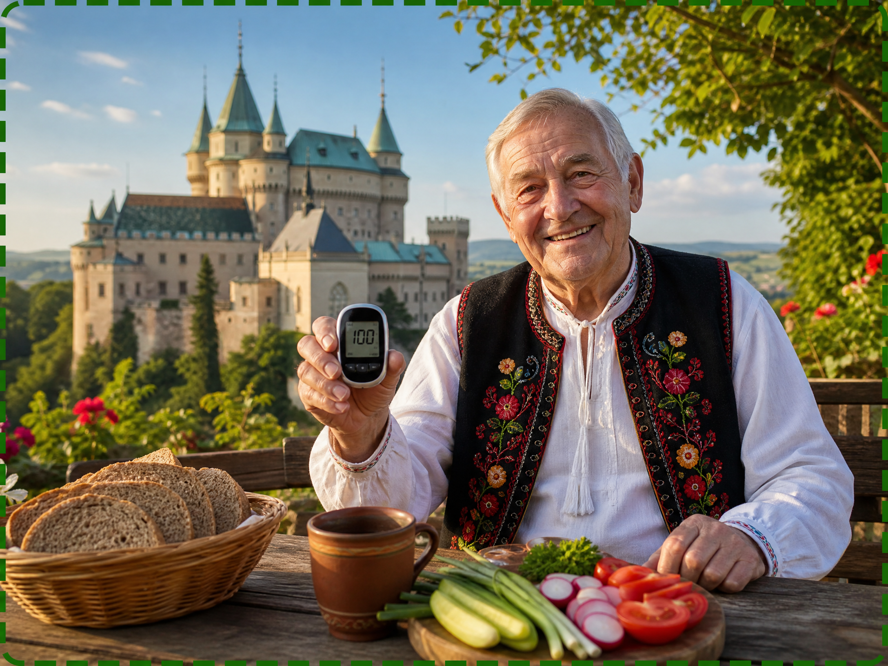
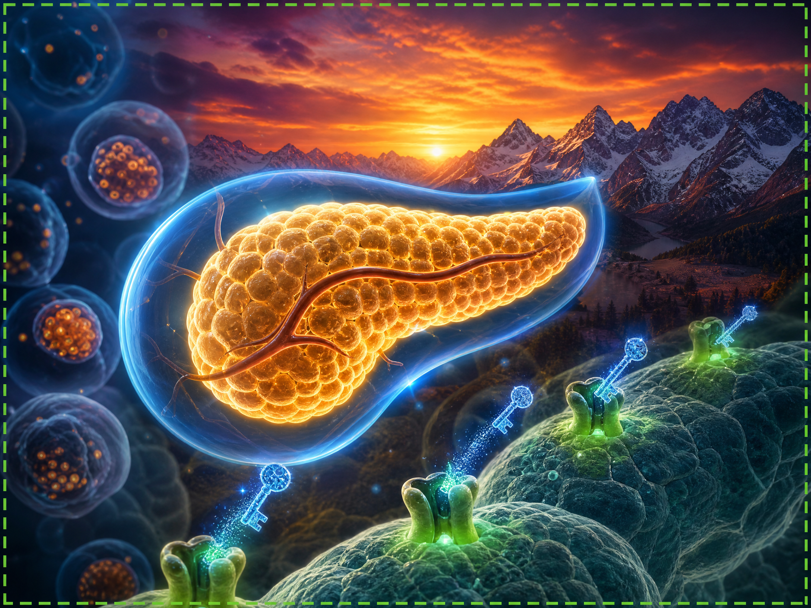

Pre mnohých slovenských seniorov je riadenie hladiny cukru v krvi každodennou výzvou. Neustály strach z kolísania glykémie môže premeniť každé jedlo na stresujúci zážitok, obmedzujúc radosť z tradičnej slovenskej kuchyne a spoločných chvíľ s rodinou. Ale čo keby existovala prirodzená cesta k podpore rovnováhy organizmu, ktorá by vám umožnila opäť si užívať pôžitky života?
KLIKNITE SEM A OBJAVTE RIEŠENIE
Predstavte si, že môžete sedieť pri rodinnom stole a vychutnávať si bryndzové halušky alebo kapustnicu, bez obáv z následkov. Nový prístup, založený na najnovších objavoch, ponúka práve takúto nádej. Nejde o extrémne diéty, ale o prebudenie prirodzených obranných a regulačných mechanizmov nášho tela.
Naši experti analyzovali túto inovatívnu metódu, ktorá si získava popularitu po celom Slovensku. Výsledky hlásené tými, ktorí ju vyskúšali, hovoria o znovuobjavenej energii, stabilnejšej hladine cukru a výraznom zlepšení kvality každodenného života.
POZRITE SI PODROBNÉ VIDEO TERAZProblém často spočíva v tom, ako naše telo spracováva cukry s vekom. Kryštáliky cukru môžu "upchávať" krvné cievy, brániac bunkám absorbovať živiny. Táto nová formula pôsobí ako jemný "čistič", pomáhajúc rozpúšťať tieto prekážky a obnovovať zdravý prietok krvi, čím zabezpečuje, že energia sa dostane tam, kam má.

Nedovoľte, aby boli najlepšie roky života obmedzené. Pripravili sme exkluzívne a poučné video, ktoré krok za krokom vysvetľuje, ako tento proces funguje a ako môžete začať svoju cestu k lepšiemu zdraviu. Znovu objavte radosť zo života!
KLIKNITE SEM PRE CELÉ VIDEO